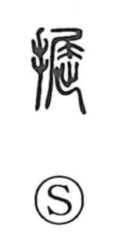

掘

Kun: horu, ugatsu | On: kutsu
to dig ・ to excavate ・ to bore
Explanation
掘 is a picto-phonetic character formed with the hand element on the left and 屈 on the right as the phonetic. In ancient script, 屈 shows a crouching animal with its tail bent, and characters built on it often point to that animal’s dwelling: 窟 names the cave or lair, while 掘 depicts the hand scattering earth to open a 堀, a pit or hole, for living. From this scene, the character takes the sense of digging into the ground—opening or boring a hole—hence compounds like 盗掘 for illicit digging.